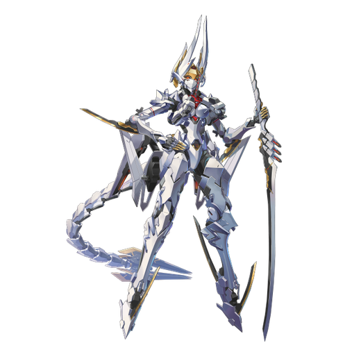

基本データ
- コスト
- 3.0
- 体力
- 未入力
- 赤ロック
- 32
- 動画
- 登録動画

Move Table
| 射撃 | 名称 | 弾数 | 威力 | 備考 |
|---|---|---|---|---|
| メイン射撃 | 鬼銃 | 7 | 210 | 実弾BR |
| チャージメイン射撃 | 鬼尾 | - | 195 | 移動撃ちできるオールレンジ攻撃 |
| サブ射撃 | 鬼息 | 1(3凸時2) | 345 | 強制ダウン |
| 妖刀状態横サブ射撃 | 鬼息 | 315 | - | 非強制ダウン |
| 後サブ射撃 | 繚乱 | 1 | 224(129) | 位置サーチ攻撃。妖刀時は威力低下・補正緩和 |
| サブ格闘 | 疾風迅雷 | - | - | 特殊移動 |
| メ射派生 鬼牙 | 1 | 278 | - | 横入力は大きく移動 |
| 妖刀状態メ射派生 鬼牙 | 278(N)384(横) | - | Nは3way、横は3連射に変化 | |
| 前格派生 牙突 | - | 461 | - | スーパーアーマー |
| 妖刀状態前格派生 牙突 | 519 | - | SA+判定出しっぱ突進 | |
| 後+ガード | 妖刀 | 100 | - | 時限強化 |
| 格闘 | 名称 | 入力 | 弾数 | 威力 | 備考 |
|---|---|---|---|---|---|
| メイン格闘 | 素振 | NN | - | 561 | 手早く終わる 後格闘派生 |
| 驟雨 | N(1)→後 | - | - | 545~693 | 4凸解禁。長押しでヒット数増加 |
| 妖刀状態メイン格闘 | 素振 | NNN | - | 732 | 強制ダウン |
| 横格闘 | 素振 | 横N | - | 456 | 打ち上げ 後格派生 |
| 驟雨 | 横(1)→後 | - | - | 530~678 | N格と同様 |
| 妖刀状態横格闘 | 素振 | 横NN | - | 702 | 強制ダウン |
| 後格闘 | 唐竹割 | 後 | - | 240 | ピョン格闘 |
| 妖刀状態後格闘 | 後 | - | - | 576 | 範囲拡大 |
| 前格闘 | 袈裟斬 | 前NN | - | 486 | ダウン拾い |
| 妖刀状態前格闘 | 前NN | - | - | 614 | ダウン拾い |
| BD格闘 | 袈裟斬 | BD中前N | - | 471 | 打ち上げ斬り抜け |
| 妖刀状態BD格闘 | BD中前N | - | - | 677 | 3連斬り抜け |
| バーストアタック | 名称 | - | 威力 | ||
| バーストアタック | 煉獄 | - | /938/851 | 乱舞技 | |
| 後バーストアタック | 断罪 | - | /842/765 | 5凸解禁。使用すると通常形態へ移行 |